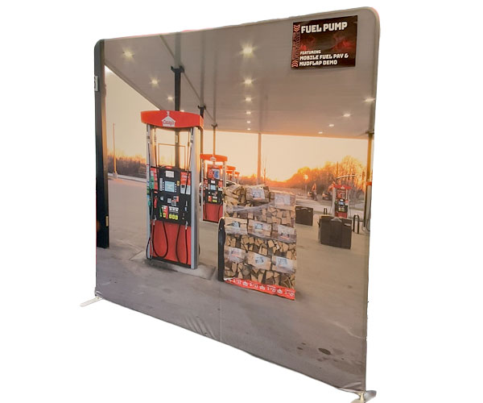

<section id="boothContainer">
<div class="row">
<div class="column_half left_half"> 
  
  <!-- The Target Display Container -->
  <div class="targetContainer" style="margin-top: 15px; padding: 10px; border-radius: 8px;"> 
    
    <!-- Image Element (Hidden by default) --> 
     
    
    <!-- Video Element (Hidden by default) -->
    <video class="targetVideo" controls style="display: none; max-width: 100%; height: auto; max-height: 400px; border-radius: 4px; margin: auto;" onclick="openMediaModal(this)"> Your browser does not support the video tag. </video>
    
    <!-- The Buttons (Use your local relative file paths here) -->
	  <div class="row text-center">
		       <button onclick="displayMedia('_images/booth-banner.jpg', this)"></button>
		    <button onclick="displayMedia('_images/booth-videowalkthrough.mp4', this)"></button>

		  </div>
  </div>
  </div>
  <div class="column_half right_half">
    <h2>Trade show booth design</h2>
   <p class="text-center"> <span class="badge">Video</span> <span class="badge">Graphic design</span> <span class="badge">Visual merchandising</span> <span class="badge">Space design</span> <span class="badge">Photography</span></p>
    <p>The technology team was looking to showcase the "Store of the Future" at the annual Casey's Commitment Conference. I led the design of the booth, the prototypes of the apps for pay at the pump, took the photography of the banners along the perimeter, designed the print banners and logo, and produced videos showing the sponsors of the booth.</p>
  </div>
</div>
</section>
